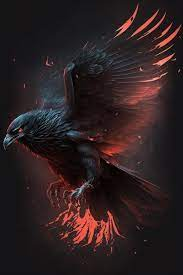
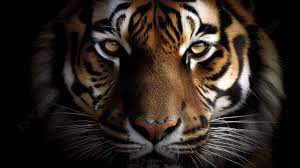
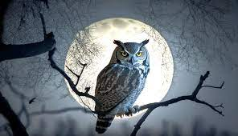
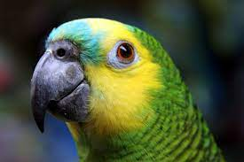
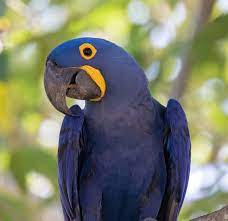
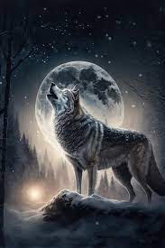
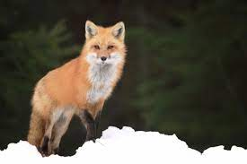
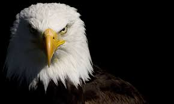

Corvo

Corvo é uma ave da família dos corvídeos, normalmente caracterizado pela sua plumagem escura (geralmente preta) e encontrado em quase todos os continentes. Popularmente, o corvo é interpretado como o sinal místico de mau presságio.
Tigre

O tigre [feminino: tigresa] é um mamífero carnívoro da família dos felídeos, que habita o continente asiático. Dentre suas subespécies é o maior entre todos os felinos selvagens do mundo. São animais extremamente territoriais e solitários.
Coruja

Corujas são aves que apresentam cabeça grande, rosto achatado, grandes olhos e bico forte e curvado. São animais, em sua maioria, noturnos e bem adaptados a viver na escuridão, sendo capazes, por exemplo, de capturar suas presas mesmo contando apenas com a luminosidade garantida pela Lua. Graças aos hábitos noturnos, as corujas são conhecidas também como “rainhas da noite”.
Papagaio

O papagaio-verdadeiro é principalmente um papagaio verde com cerca de 37 centímetros de comprimento e pesa cerca de 400 gramas. Tem penas azuis na testa, acima do bico e amarelo na cara e coroa. Distribuição do azul e amarelo varia muito. A cor da íris dos adultos é amarelo-laranja no macho ou vermelho-laranja na fêmea. Se destaca um fino anel externo vermelho. Os imaturos têm a íris uniformemente acastanhada. O bico é negro no macho adulto. É uma das espécies mais inteligentes de ave do planeta. Sua expectativa de vida é de oitenta anos. Os papagaios-verdadeiros também costumam repetir o que ouvem de seus donos.
Arara-Azul

"A arara-azul, também chamada arara-azul-grande, é uma espécie de ave, encontrada no Brasil, que se caracteriza por ser a maior entre os psitacídeos (família Psittacidae), chegando a atingir mais de um metro de comprimento, medindo-se da ponta do bico à ponta da cauda. Essa espécie habita diferentes formações vegetais, sendo encontrada em formações savânicas e até em ambientes de floresta no Brasil, Paraguai e Bolívia. As maiores populações dessa espécie de arara são encontradas no Pantanal."
Lobo

Lobo é um animal carnívoro da família dos canídeos e que pertence ao gênero Canis. São quatro espécies que recebem tal designação: o lobo-cinzento (Canis lupus), lobo-vermelho (Canis rufus), lobo-etíope (Canis simensis), lobo-dourado (Canis anthus ou Canis lupaster). O lobo-oriental tem classificação discutível se espécie em si (Canis lycaon), uma subespécie do lobo-cinzento, ou um híbrido do lobo e coiote.
Raposa

Raposa é o nome dado a diferentes mamíferos onívoros da família Canidae. São consideradas raposas verdadeiras as espécies que pertencem ao gênero Vulpes, tais como a raposa-vermelha (Vulpes vulpes) e da raposa-do-ártico (Vulpes lagopus).
Raposas têm uma aparência que lembra a de um cachorro, destacando-se pelo seu focinho pontiagudo, orelhas eretas e pontudas e uma cauda espessa, a qual se relaciona com equilíbrio e também com o aquecimento do animal. Ratos, lebres, peixes, carniças e frutos são alguns produtos que podem fazer parte da dieta desses animais.
Águia

Águias são aves de rapina que se destacam por serem predadores ágeis e fortes. Possuem uma visão bastante eficiente, sendo algumas espécies capazes de avistar a presa até 3 km de distância. Além de apresentarem excelente visão, contam com bicos fortes e garras afiadas que garantem eficiência na captura da presa.
Diferentemente do que muitos pensam, o termo águia não é usado exclusivamente para uma espécie, sendo essa a denominação popular de mais de 70 aves de rapina da família Accipitridae. No Brasil, nove águias podem ser encontradas: águia-solitária, águia-serrana, harpia, uiraçu, águia-cinzenta, águia-pescadora, gavião-de-penacho, gavião-pega-macaco e gavião-pato. Dentre essas aves, merece destaque a harpia, que se trata da maior águia do mundo.
Falcão